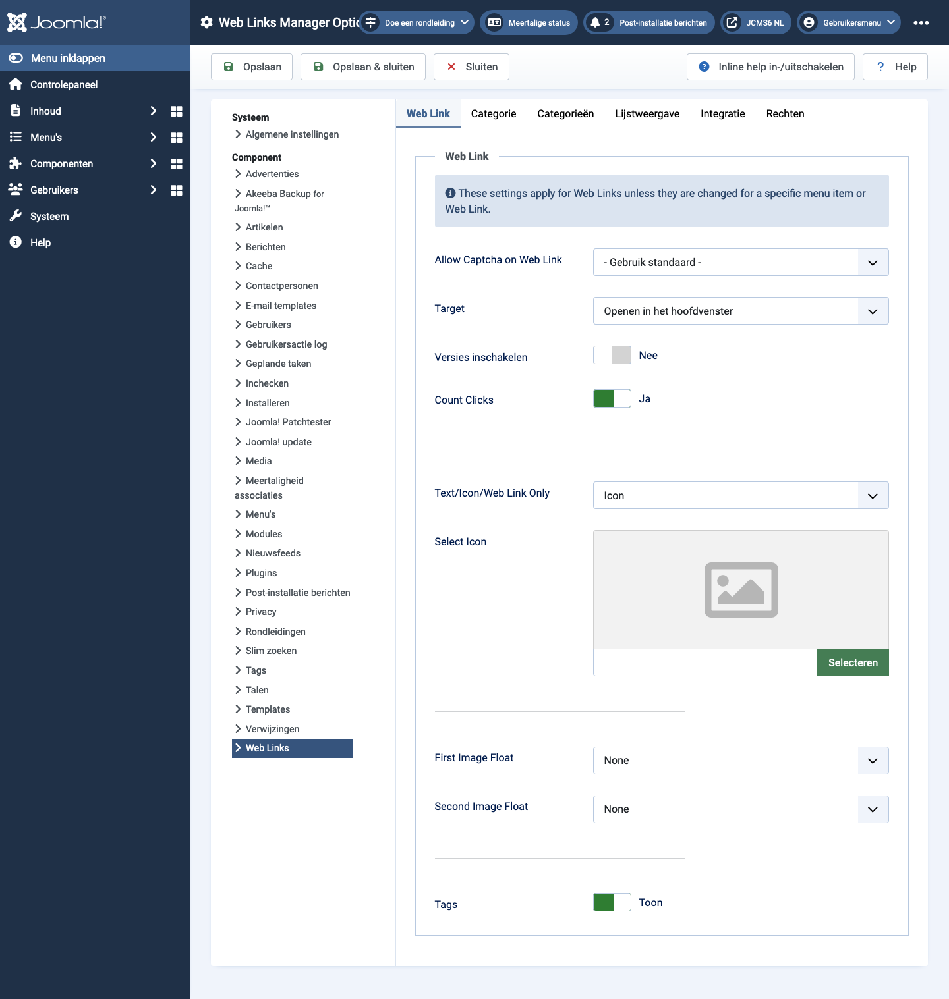

Joomla Help Screens
Webkoppelingsopties
Beschrijving
De configuratie van Web Links Opties stelt u in staat parameters in te stellen die wereldwijd worden gebruikt voor alle webkoppelingsmenu-items.
Gemeenschappelijke Elementen
Sommige elementen van deze pagina worden behandeld in afzonderlijke Help-artikelen:
Toegang krijgen
- Selecteer Componenten -> Weblinks -> Links in het Administrator menu. Vervolgens...
- Selecteer de Opties knop in de Toolbar.
Screenshot

Web Link Tab
- Captcha toestaan op Web Link Selecteer de captcha-plugin die zal worden gebruikt in het invulformulier voor de weblink. Mogelijk moet je vereiste informatie invoeren voor je captcha-plugin in de Plugin Manager. Als 'Standaard gebruiken' is geselecteerd, zorg er dan voor dat een captcha-plugin is geselecteerd in de Globale Configuratie.
- Doel Doelbrowservenster wanneer de link is geselecteerd.
- Klikken tellen Als Ja, wordt het aantal keren dat op de link is geklikt vastgelegd.
- Tekst/Icoon/Web Link Alleen Toont een tekst, icoon, of niets bij de Web Link. Standaard is Icoon.
- Selecteer Icoon Hiermee kun je een afbeeldingsbestand selecteren om als standaardicoon voor weblinks te gebruiken. Wanneer je op de Selecteer-knop klikt, wordt een modaal venster geopend waarmee je door de afbeeldingsbestanden op je site kunt bladeren.
- Afbeelding Zweven Waar de afbeelding op de pagina moet worden weergegeven.
- Toon Tags Toon of verberg de tags van de feed.
Categorie Tab
Categorieopties bepalen hoe weblinks worden weergegeven wanneer je doordringt naar een weblink om de links ervan te bekijken.
- Kies een lay-out Selecteer de standaardlay-out die moet worden weergegeven wanneer je op een Categorielink klikt. Als je een alternatieve lay-out maakt voor een categorielay-out, kun je die als standaard selecteren.
- Categorietitel Toon of verberg de titel van de categorie.
- Categoriebeschrijving Toon of verberg de beschrijving voor de categorie.
- Categorieafbeelding Toon of verberg de categorieafbeelding.
- Subcategorieën Niveaus Hoeveel niveaus van subcategorieën moeten worden getoond bij het weergeven van een categorieoverzicht.
- Lege Categorieën Toon of verberg categorieën die geen items of subcategorieën bevatten.
- Subcategorieën Beschrijvingen Toon of verberg de beschrijvingen voor subcategorieën die worden getoond.
- # Web Links Toon of verberg het aantal weblinks in elke categorie.
- Toon Tags Toon of verberg de tags voor een enkele categorie.
Categorieën Tab
Deze instellingen gelden voor Web Links Categorieën Opties tenzij ze worden gewijzigd voor een specifiek menu-item.
- Beschrijving van Topniveau Categorie Toon of verberg de beschrijving van de categorie op het hoogste niveau.
- Subcategorieën Niveaus Hoeveel niveaus in de hiërarchie moeten worden getoond.
- Lege Categorieën Toon of verberg categorieën die geen items en geen subcategorieën bevatten.
- Subcategorieën Beschrijvingen Toon of verberg de beschrijving van elke subcategorie.
- # Web Links Toon of verberg het aantal weblinks in elke categorie.
Lijstindelingen Tab
Deze instellingen gelden voor Web Links Lijstopties, tenzij ze worden gewijzigd voor een specifiek menu-item.
- Filter Veld Het filterveld maakt een tekstveld waarin een gebruiker een waarde kan invoeren om de getoonde weblinks in de lijst te filteren.
- Verbergen: Geen filterveld tonen.
- Titel: Filter op weblinktitel.
- Auteur: Filter op de naam van de auteur.
- Hits: Filter op het aantal keren dat op de weblink is geklikt.
- Weergave Selecteren Toon of verberg de Weergave # controle waarmee de gebruiker het aantal te tonen items in de lijst kan selecteren.
- Tabelkoppen Toon of verberg een kop boven de tabel met weblinks.
- Links beschrijving Toon of verberg de beschrijving van de weblink.
- Hits Verberg of toon het aantal keren dat deze weblink is bezocht.
Integratie Tab
Deze instellingen bepalen hoe de Web Links Component zal integreren met andere extensies.
- RSS Feed Link Toon of verberg de feed links URL's. Een feed link zal verschijnen als een feed icoon in de adresbalk van de meeste browsers.
- Verwijder ID's uit URL's Ja of Nee.
- Aangepaste Velden Bewerken Ja of Nee.
Tips
- Als je een beginnende gebruiker bent, kun je de standaardwaarden hier gewoon aanhouden totdat je meer leert over het gebruik van globale opties.
- Als je een gevorderde gebruiker bent, kun je tijd besparen door hier goede standaardwaarden in te stellen. Wanneer je menu-items instelt en webkoppelingen maakt, kun je voor de meeste opties de standaardwaarden accepteren.
- Alle waarden die hier zijn ingesteld, kunnen worden overschreven op het niveau van het menu-item, de categorie of de webkoppeling.
Vertaald door openai.com